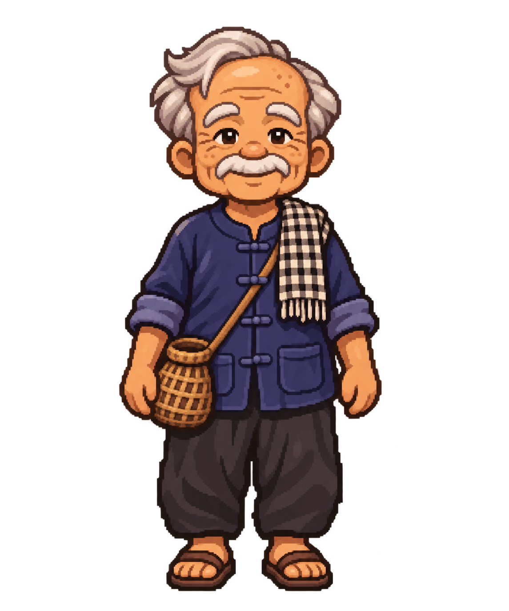
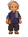

Ông Sáu riêng · Bản để duyệt
Tóc bạc, áo chàm, khăn rằn và giỏ cá; không đội nón để tránh trùng nhân vật người chơi.

Nguồn RGBA 1145 × 1374
48 × 64 · Phóng 4×Ảnh mới đang duyệt thiết kế, chưa là atlas animation production. Camera toàn ao đã chỉnh riêng trong source; chỉ bản mẫu này dùng sprite Ông Sáu mới.